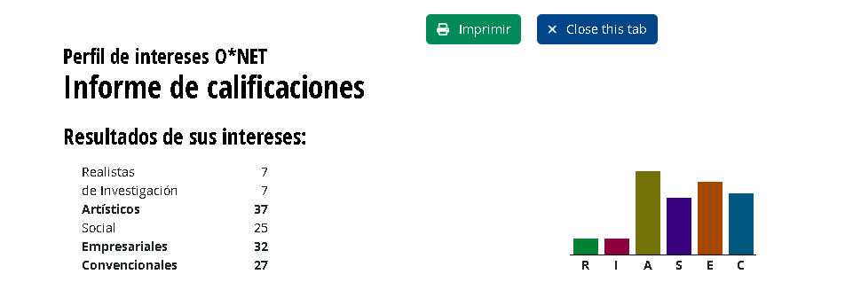
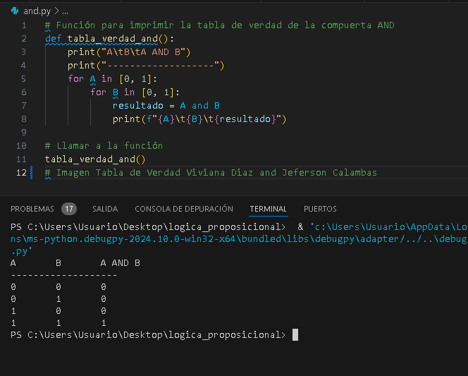
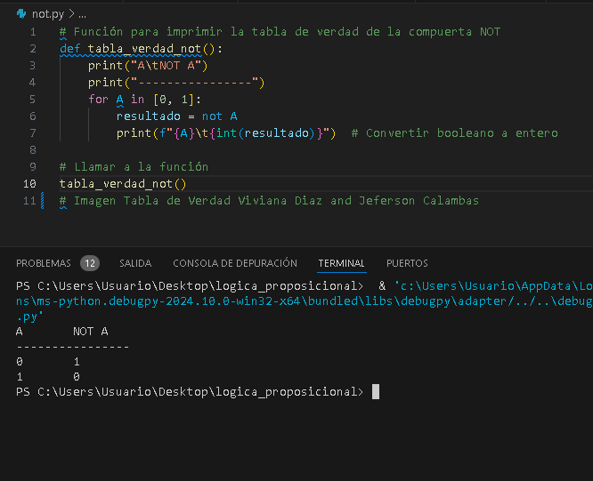
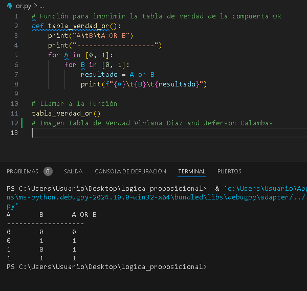
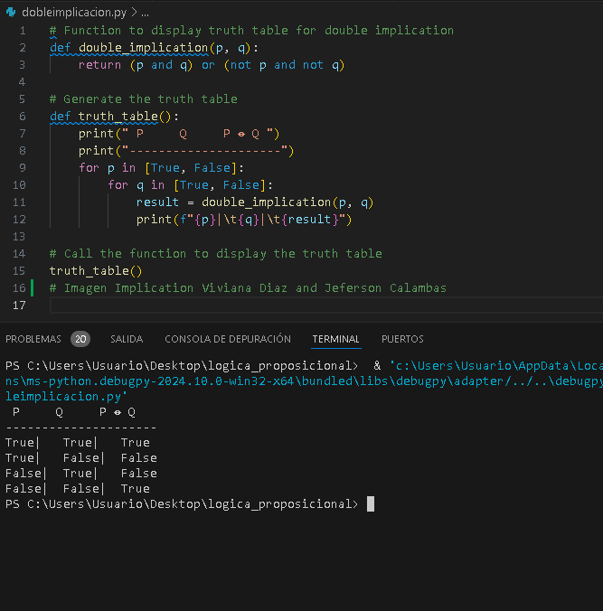
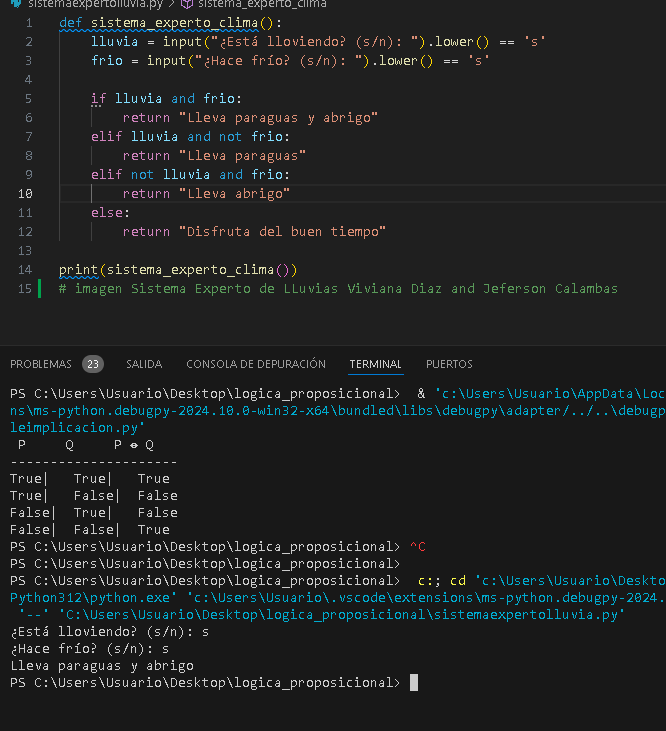

En la actividad del parcial, se desarrolló un código en Python utilizando la librería itertools para realizar operaciones iterativas avanzadas. El código implementaba clases para representar oraciones lógicas, como Symbol para símbolos individuales, And para conjunciones, Not para negaciones, y otras como Or, Implication y Biconditional. Cada clase incluía métodos como evaluate para evaluar las expresiones lógicas basadas en un modelo dado.
Además, se definió un método model_check para verificar si una base de conocimiento lógica implica una consulta dada, utilizando un algoritmo de evaluación exhaustiva para revisar todos los posibles valores de verdad de los símbolos involucrados.
El código comenzaba con la importación de la librería:
import itertools # Importa la librería itertools para operaciones iterativas avanzadas.
A continuación, se definía una clase base llamada Sentence:
class Sentence():
"""
Clase base para representar una oración lógica.
"""
def evaluate(self, model):
raise Exception("nada que evaluar") # Esta excepción se lanza si el método no es implementado.
def formula(self):
return "" # Devuelve una representación de la fórmula lógica en forma de cadena de texto.
def symbols(self):
return set() # Devuelve un conjunto vacío, se espera que subclases lo implementen.
@classmethod
def validate(cls, sentence):
if not isinstance(sentence, Sentence):
raise TypeError("debe ser una oración lógica") # Lanza un error si no lo es.
@classmethod
def parenthesize(cls, s):
def balanced(s):
count = 0 # Inicia un contador.
for c in s:
if c == "(":
count += 1
elif c == ")":
if count <= 0:
return False
count -= 1
return count == 0 # Verifica si la cadena tiene paréntesis balanceados.
if not len(s) or s.isalpha() or (s[0] == "(" and s[-1] == ")" and balanced(s[1:-1])):
return s
else:
return f"({s})" # Rodea con paréntesis si no están presentes.
El código seguía con la definición de otras clases como Symbol, And, y más:
class Symbol(Sentence):
def __init__(self, name):
self.name = name # Define el nombre del símbolo.
def evaluate(self, model):
try:
return bool(model[self.name]) # Evalúa el valor del símbolo en el modelo.
except KeyError:
raise EvaluationException(f"variable {self.name} no está en el modelo")
def formula(self):
return self.name # Devuelve el nombre del símbolo como fórmula.
def symbols(self):
return {self.name} # Devuelve el conjunto que contiene solo este símbolo.
Finalmente, otras clases como Not y And extendían la funcionalidad para permitir la evaluación de expresiones lógicas más complejas.